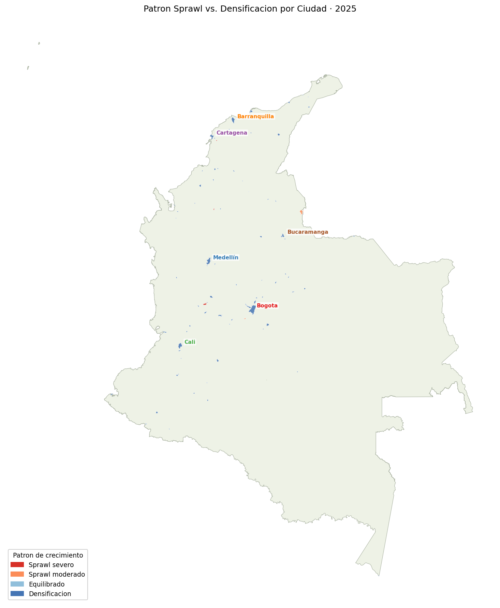
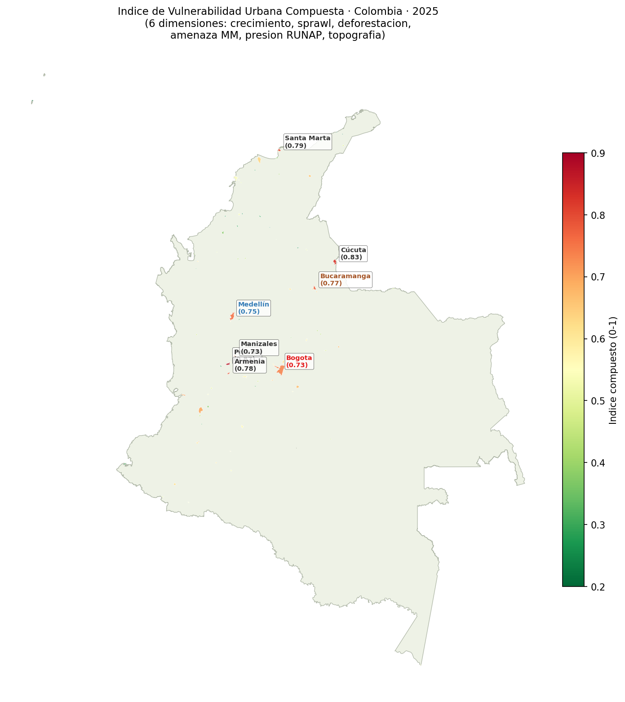
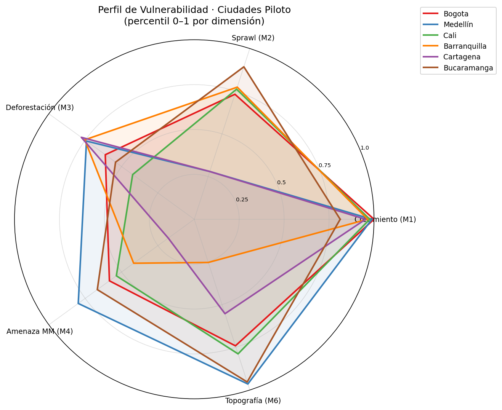
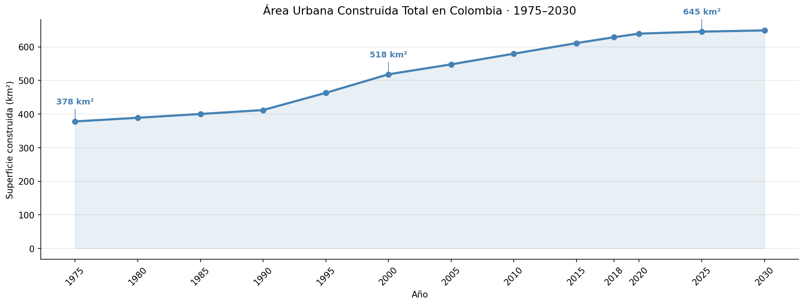
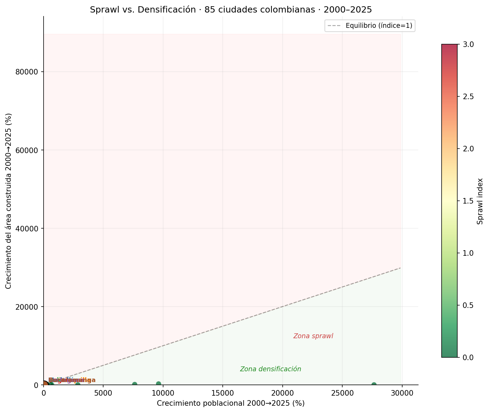

Expansión Urbana Colombia (1975–2030)
Pipeline geoespacial end-to-end: 85 ciudades colombianas, 8 fuentes heterogéneas, 6 módulos analíticos sobre crecimiento, sprawl, deforestación y riesgos naturales.
Resumen ejecutivo
Pipeline completo de ingeniería y análisis geoespacial que cuantifica la expansión urbana colombiana (1975–2030) en 85 ciudades. Integra 8 fuentes de datos heterogéneas (GHSL, Hansen, SRTM, RUNAP, IDEAM) en un sistema de referencia unificado (EPSG:9377), carga los datos en PostgreSQL/PostGIS y ejecuta 6 módulos analíticos independientes para responder preguntas de política pública sobre ordenamiento territorial, gestión del riesgo y conservación ambiental.
Contexto / Problema
Colombia es uno de los países más urbanizados de América Latina: más del 80% de su población vive en ciudades. Sin embargo, gran parte de esa urbanización ocurrió sin planificación adecuada, en laderas empinadas, zonas inundables o en proximidad a ecosistemas protegidos. La ausencia de un análisis integrado, multi-ciudad y con series temporales largas dificulta la toma de decisiones de política pública. Este proyecto construye esa base de datos y análisis desde fuentes abiertas de alta resolución.
Datos
| Fuente | Producto | Período | Tipo |
|---|---|---|---|
| JRC / GHSL | GHS-BUILT-S (superficie construida) | 1975–2030 | Raster 100 m |
| JRC / GHSL | GHS-POP (población estimada) | 1975–2030 | Raster 100 m |
| JRC / GHSL | GHS-UCDB (centros urbanos) | 2025 | Vector — 85 ciudades |
| Hansen / UMD | Global Forest Change | 2001–2025 | Raster 100 m |
| PNN / MADS | RUNAP (áreas protegidas) | Vigente | Vector — ~1 200 AP |
| IDEAM | Amenaza movimientos en masa | Estático | Raster 100 m |
| IDEAM | Amenaza por inundación | Estático | Vector |
| NASA / USGS | SRTM DEM | 2000 | Raster 30 m → 100 m |
Sistema de referencia: EPSG:9377 (MAGNA-SIRGAS 2018 / Colombia Origen Nacional) · Resolución: 100 m × 100 m
Herramientas y tecnologías
Geoespacial raster
Geoespacial vector
Base de datos
Análisis y visualización
Metodología / Proceso
Estandarización
9 scripts reproyectan, mosaican, remuestrean y recortan a Colombia las 8 fuentes de datos → EPSG:9377 @ 100 m, LZW + tiles 512×512.
Carga en base de datos
Carga de vectores y catálogo de rasters en PostgreSQL/PostGIS. DDL: esquemas raw, catalog, analysis, staging; índices espaciales y vistas materializadas.
Módulos analíticos (M1–M6)
Seis módulos independientes calculan estadísticas zonales y derivados (tasas de crecimiento, índice de sprawl, solapamiento deforestación, exposición a amenazas, presión RUNAP, topografía).
Reporte narrativo
Notebook 01_reporte_analisis.ipynb responde las 6 preguntas con visualizaciones geoespaciales y construye el índice de vulnerabilidad compuesta multidimensional.
Mi rol y contribución
- Diseñé la arquitectura completa del pipeline (3 fases + reporte) con scripts orquestadores y soporte para re-ejecución parcial (
--from,--only). - Construí el proceso de estandarización para 8 fuentes heterogéneas en un sistema de referencia unificado (EPSG:9377).
- Resolví conflictos técnicos complejos: conflicto
proj.dbentre PostgreSQL y GDAL, limitación WKT1 para EPSG:9377, restricciones de nombres de columnas del sistema en PostgreSQL. - Diseñé el modelo de base de datos: esquemas
raw,catalog,analysis,staging; vistas materializadas para buffers RUNAP; índices espaciales. - Implementé los 6 módulos analíticos: lógica de cálculo para sprawl, solapamiento deforestación-expansión, exposición poblacional a amenazas, presión sobre áreas protegidas y correlación topográfica.
- Construí el índice de vulnerabilidad compuesta multidimensional (6 dimensiones) y la visualización radar comparativa para ciudades piloto.
Resultados e insights
| Módulo | Hallazgo clave |
|---|---|
| M1 — Crecimiento | Colombia más que duplicó su superficie urbana construida entre 1975 y 2025; mayor aceleración en 1990–2010 |
| M2 — Sprawl | Mayoría de ciudades muestra densificación, pero un subconjunto de medianas presenta sprawl severo |
| M3 — Deforestación | Ciudades del Pacífico, piedemonte y Caribe muestran mayor solapamiento de expansión con zonas deforestadas |
| M4 — Amenazas | Millones de personas en zonas de amenaza alta; Medellín, Cúcuta y Villavicencio encabezan la lista |
| M5 — RUNAP | Superficie construida detectable dentro de polígonos RUNAP con tendencia creciente desde 1975 |
| M6 — Topografía | Ciudades andinas muestran tendencia al alza en pendiente media de nuevas expansiones |

Expansión urbana construida por ciudad — Colombia 2025

Patrón sprawl vs. densificación por ciudad — 2025

Índice de vulnerabilidad urbana compuesta — 6 dimensiones 2025

Perfil de vulnerabilidad compuesta — ciudades piloto

Evolución del área urbana total en Colombia 1975–2030

Sprawl vs. densificación — 85 ciudades colombianas 2000–2025
Conclusiones
El análisis confirma que la urbanización colombiana ha sido cuantitativamente significativa pero cualitativamente desigual: las ciudades que más crecen no siempre son las que mejor lo hacen. La coexistencia de densificación eficiente y sprawl descontrolado en el mismo período evidencia la heterogeneidad de los procesos urbanos locales. El solapamiento con áreas de riesgo y ecosistemas protegidos señala la urgencia de políticas de ordenamiento territorial basadas en evidencia geoespacial de alta resolución.
Aprendizaje técnico: La centralización de toda la configuración en config/settings.py (rutas, CRS, años, nodata) elimina inconsistencias entre los 21 scripts y hace el pipeline completamente reproducible con un único punto de verdad.